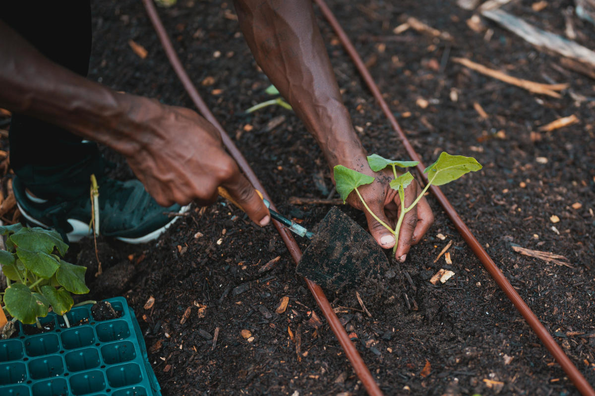
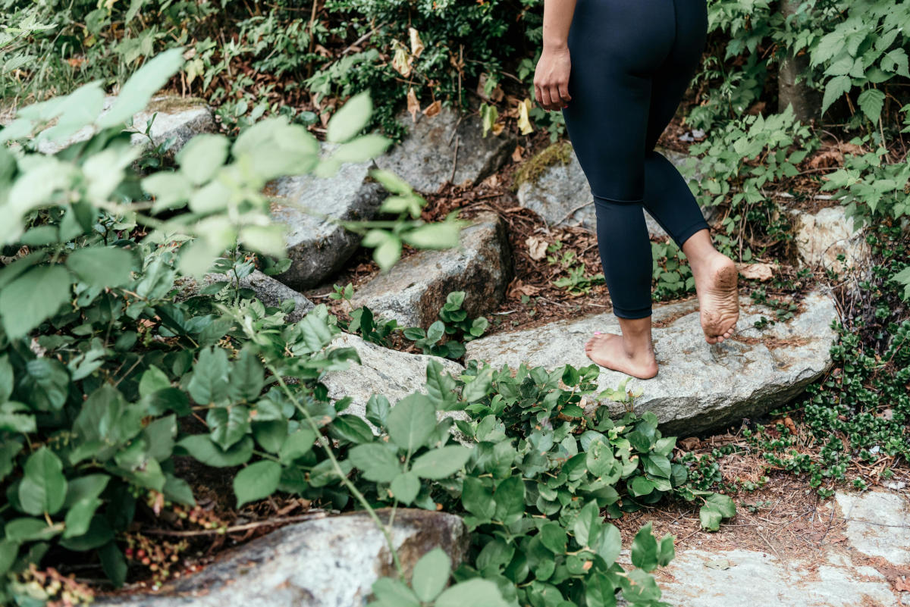

Conheça as iniciativas que estão transformando nossa comunidade e veja como você pode fazer parte.
Horta Terapêutica "Mente Fértil"

Nossa horta não produz apenas alimentos orgânicos, mas também cultiva a paz interior. Participantes do projeto colocam a mão na terra, aprendem sobre o ciclo das plantas e praticam a atenção plena (mindfulness) através da jardinagem. É uma atividade comprovadamente eficaz para reduzir o estresse e a ansiedade.
Como ajudar:
Voluntariado: Junte-se a nós no plantio, manutenção e colheita. Não precisa ter experiência, apenas vontade de ajudar. Seja um voluntário!
Doações:Sua contribuição ajuda na compra de sementes, ferramentas e adubo orgânico. Doe agora!
Trilhas de Reconexão "Respire Fundo"

Organizamos caminhadas guiadas em parques e áreas de mata da região. Durante a trilha, promovemos pausas para exercícios de respiração, meditação e educação ambiental, ensinando sobre a fauna e a flora locais. É uma oportunidade de exercitar o corpo, acalmar a mente e se reconectar com o mundo natural.
Como ajudar:
Voluntariado: Se você conhece a região ou tem experiência com guiamento, pode nos ajudar a liderar os grupos. Participe!
Doações: Ajude-nos a custear kits de primeiros socorros, lanches para os participantes e materiais educativos. Doe agora!